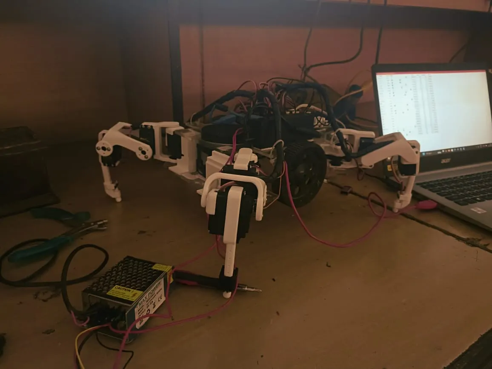

01Robotics · Locomotion · Published
Hybrid Quadruped-Wheeled Robot
Problem: Mobile robots need efficient flat-ground motion without losing the ability to cross uneven terrain and obstacles.
Approach: Combined wheeled mobility with quadrupedal traversal through distributed embedded control, sensor feedback, and coordinated gait transitions.
200 Hz control loop
<250 ms mode switching
13 cm obstacle traversal
70%+ cost reduction